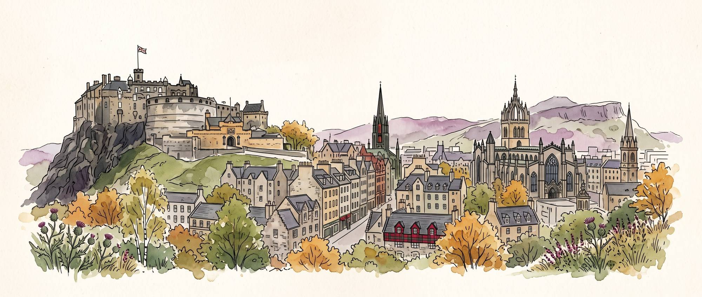
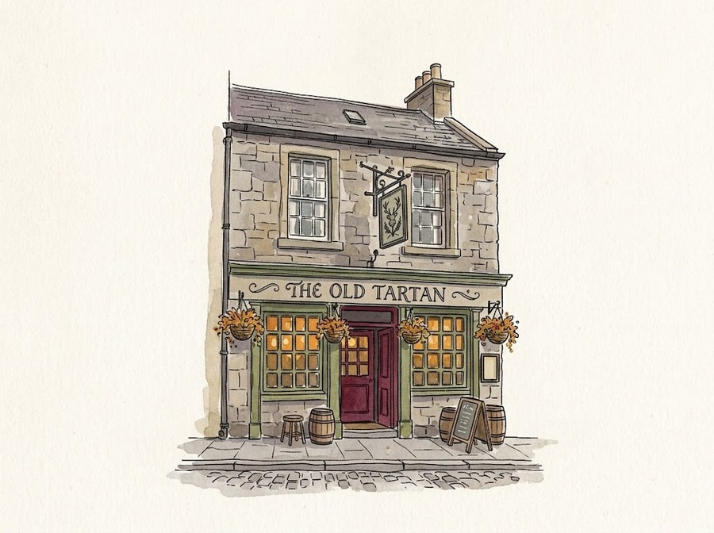
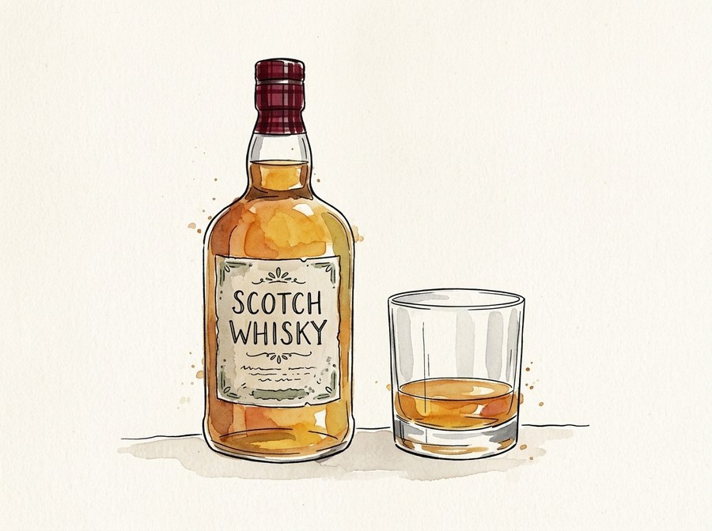

Edinburgh
Mannenweekend · 2 – 4 oktober 2026

Hoe het begon
Het bericht dat het allemaal begon
Caesar schreef er nauwelijks over. Niet omdat er niets te halen viel, maar omdat wie er kwam, zelden haast had om weer terug te keren.
De bewoners waren koppig, het weer onbetrouwbaar en de Romeinen schijnen er meer tijd te hebben verloren dan gewonnen. Een oude centurio schreef dat zijn mannen er uiteindelijk hun wapens neerlegden, hun bekers met bier vulden en besloten dat veroveren van het land misschien toch niet het belangrijkste doel van de expeditie was.
Eeuwen later is er weinig veranderd.
Caledonia bestaat nog steeds.
En elf dappere mannen zullen binnenkort ontdekken waarom de Romeinen het daar nooit helemaal voor het zeggen kregen.
De mannen
De bezetting
Het weer
Weer in Edinburgh wordt opgehaald…
Het programma

Achter gesloten deuren
Twee organisatoren bepalen alles. Geen inspraak, geen stemming, geen beroep mogelijk. Zodra zij eruit zijn, staat het hier.
Wat je alvast mag weten: vrijdag heen, zondag terug, en ergens daartussen een kasteel. De rest hoor je vanzelf.
De sneuvelkoning
Wie zich weekendlang weet te onderscheiden verdient een pintje. Bovenaan staat wie er de meeste heeft — en wie zondagavond nog steeds koning is, mag het de rest van zijn leven uitleggen.

Iets gezien?
Zag je iemand iets uitspoken? Vraag hier een pintje voor hem aan — de scheidsrechter beslist.
Aangevraagd! De scheidsrechter beslist.
De kaart
Edinburgh, om je een beetje te oriënteren. Waar we precies heen gaan hoor je ter plekke — dat blijft een verrassing.
Pond & euro
Om half drie aan de bar is niemand meer goed in hoofdrekenen, en toch staat er altijd iemand te roepen dat het “ongeveer hetzelfde” is. Dat is het niet. Typ het bedrag, dan hoeft er niet gegokt te worden.
€ 12,00
Koers wordt opgehaald…
De paklijst
Voorlopig één regel
Neem een jas mee. Neem daarna nog een jas mee, want de eerste is zaterdagochtend nog nat.
De rest van de lijst volgt. Vergeet in elk geval je paspoort niet — daarmee eindigt je weekend anders op Schiphol.